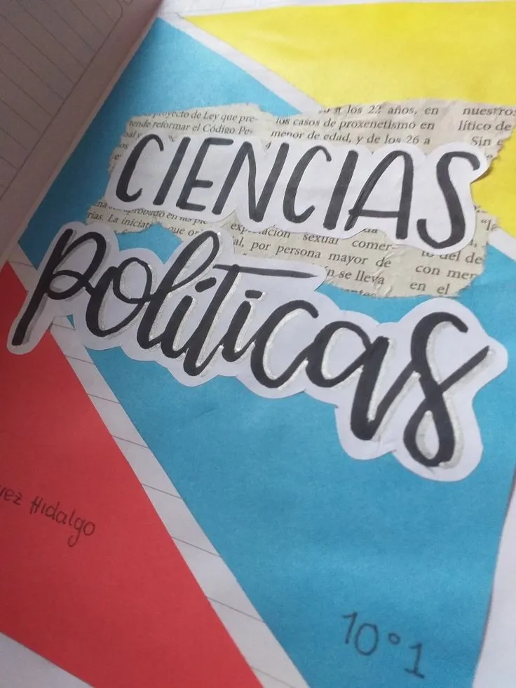
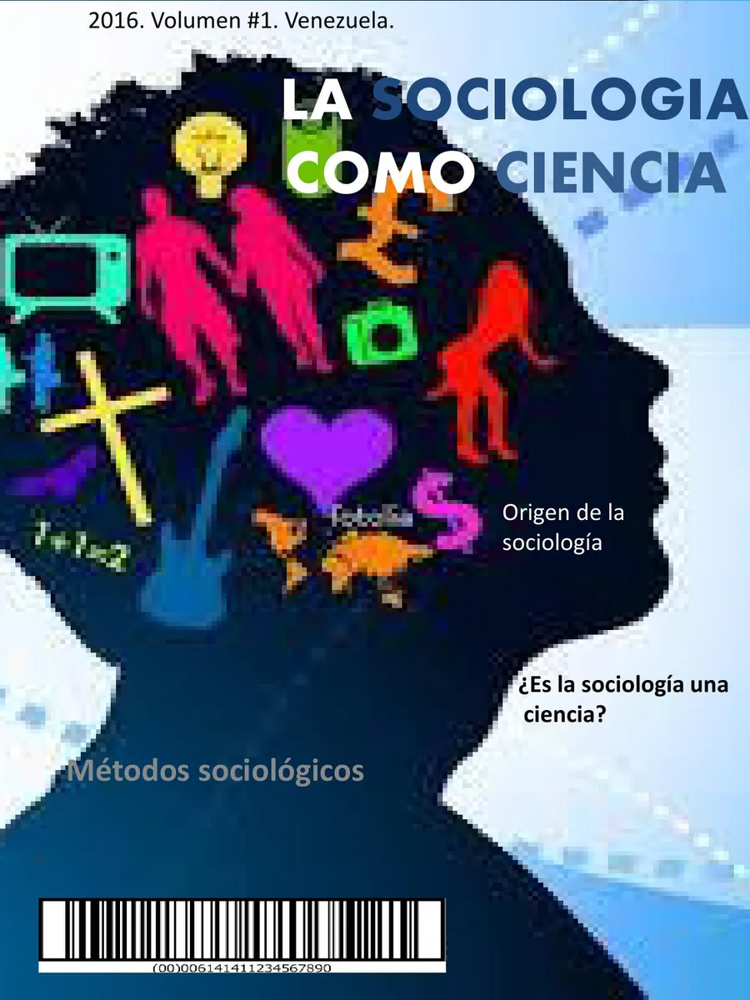

Temas 1 Parcial 1.
Las ciencias sociales son un conjunto de disciplinas académicas que estudian aspectos de lo humano relacionados el comportamiento individual y las funciones y elementos de la organización social. A diferencia de las ciencias formales, como las matemáticas, la lógica o la física; las ciencias sociales estudian los sistemas vivos. Tienen, por otro lado, más relación con las ciencias humanas (las humanidades), porque ambas que estudian gran parte de la subjetividad y la colectividad, no obstante, son diferentes en tanto que las ciencias sociales hacen énfasis en el uso de métodos científicos, mientras que las humanidades utilizan más métodos artísticos y estéticos.
Campo Disciplinar: Ciencias Sociales Parcial: Primero
Saber masEl derecho se encarga de estudiar el conjunto de las instituciones, sus sistemas de reglas y de autoridad relacionada con la legalidad.
La ciencia política es la disciplina que estudia, describe y analiza las teorías y las prácticas, los sistemas y los comportamientos políticos. Busca comprender el comportamiento de los diferentes agentes del Estado y cómo ello puede influir en el poder que tiene cada institución.
Esta ciencia social nos puede ayudar a comprender fenómenos como la migración, el crecimiento poblacional, las guerras, el desarrollo económico, entre otros, debido a que estudia las relaciones sociales humanas y sus instituciones.
Describe los procesos humanos relacionados con la creación y el intercambio de símbolos que nos sirven para el proceso comunicativo. Específicamente estudia cómo los mensajes que elaboramos pueden ser interpretados a través de distintas dimensiones políticas, culturales o económicas.
Aquí se abordan la fundamentación teórica y metodológica básica para la comprensión e interpretación de las relaciones económicas, políticas y sociales que surgen en torno a la interacción de las sociedades para satisfacer la demanda, la oferta, las carencias y las necesidades de consumo de bienes y servicios.
Con base en la formación teórica y metodológica, permite conocer al ser humano como persona, su forma de relación consigo mismo, con los otros y los objetos que lo rodean.